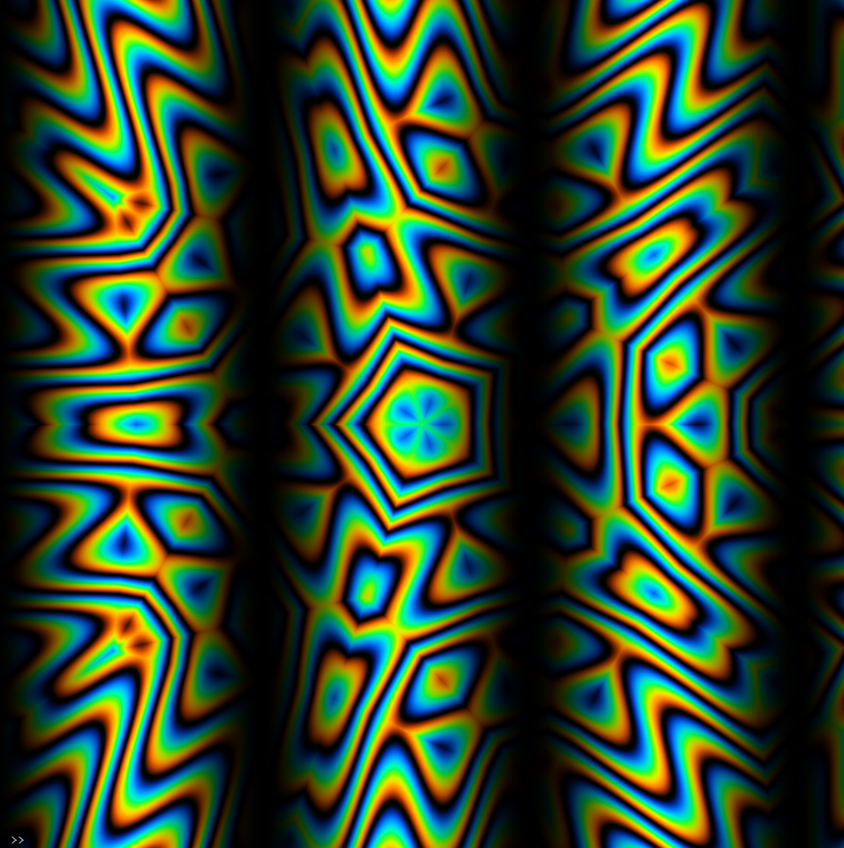

Oscillators are incredibly powerful tools by themselves. Multing, diffing and other compositing methods can get crazy results, especially when you add color to the patch.
Oscillators can be used for so many things but some ideas to get started when thinking about how to use oscillators:
In audio synthesis the key to generating interesting sounds is by taking complex soundwave forms and using those to create music. The very same thing can be said of video synthesis, both analog and digital. You can get complex oscillators by a variety of different methods. You can either build up a complex pattern underneath a set of "masking" oscillators and then mult the final output with your oscillators:
osc(100,.1,3).modulate(shape(99,5,20).modulateRotation(5)).kaleid(6).color(1,0,.5).diff(noise(35,1).posterize().modulate(osc().kaleid(3))).out()